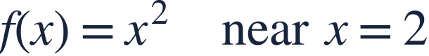
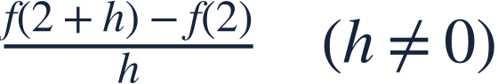
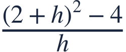
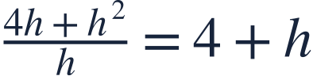
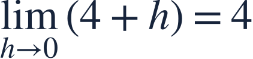
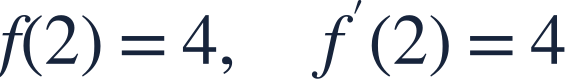
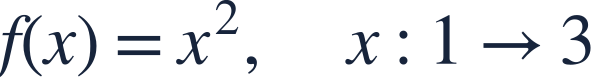

Average and instantaneous rates
평균변화율과 순간변화율

A secant measures change over an interval; a tangent measures change at an instant.
할선은 구간의 변화율을, 접선은 한 순간의 변화율을 나타냅니다.

A secant measures change over an interval; a tangent measures change at an instant.
할선은 구간의 변화율을, 접선은 한 순간의 변화율을 나타냅니다.

Divide the change in output by the change in input.
출력의 변화량을 입력의 변화량으로 나눕니다.
| h | slope |
|---|---|
| 0.10 | 4.10 |
| 0.01 | 4.01 |
| −0.01 | 3.99 |
As the interval shrinks, the secant slope approaches the tangent slope.
구간이 줄어들면 할선의 기울기가 접선의 기울기에 가까워집니다.

Keep the whole change in output inside the numerator.
출력의 변화량 전체를 분자에 넣습니다.

Simplify while h is nonzero.
h가 0이 아닐 때 식을 정리합니다.

The instantaneous rate is the limiting slope, 4.
순간변화율은 기울기의 극한인 4입니다.

The tangent slope is a rate, not the function height.
접선의 기울기는 변화율입니다. 함수의 높이와 구별하세요.

Find the average rate over this entire interval.
이 구간 전체의 평균변화율을 구하세요.